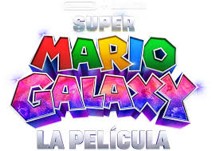

Mario y Luigi, los hermanos fontaneros, se dedican a resolver todo tipo de problemas en el Reino Champiñón, su nuevo hogar, con su habitual actitud optimista y enérgica. Mientras le echan una mano a la princesa Peach y se esfuerzan para que un diminuto y prisionero Bowser reforme su carácter, conocen a un nuevo compañero de aventuras: Yoshi. La fiesta de cumpleaños de la princesa Peach es el detonante de una aventura galáctica que propulsa a los hermanos al espacio, donde deberán frustrar los malvados planes de Bowsy y salvar a Estela. Con la llegada de dos queridos personajes, Estela y Bowsy, la aventura recibe un extra de acción por todo lo alto, momentos de comedia ¡y dramáticas sorpresas!